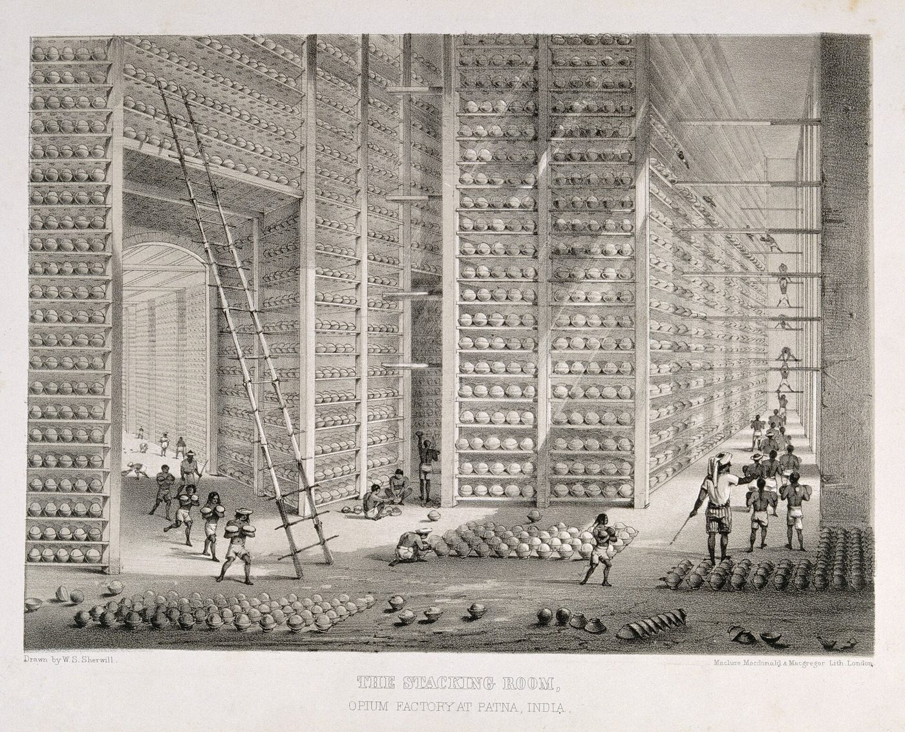

Chapter 19: The Colonial Economy and Maritime Decline, 1757–1947¶
Chapter Overview
In 1757 the English East India Company was one trading company among several; by the mid-nineteenth century it, and then the British Crown, ruled the subcontinent. This chapter follows the economic consequences: the Company’s use of Bengal’s revenue to finance its trade, the decline of India’s textile exports, the land revenue settlements, the commercialisation of agriculture, the opium trade with China, the railways, the famines, the growth of Indian-owned industry, the decline of Indian shipbuilding and shipping, and the migration of Indian labour and merchants across the Indian Ocean. Almost every one of these subjects is the object of a historiographical debate, between the nationalist critique of Dadabhai Naoroji and R. C. Dutt and its successors on one side, and revisionist economic historians such as Morris D. Morris and Tirthankar Roy on the other. The chapter sets out the evidence and the main positions, and uses only figures whose source can be given.
19.1 Approaching the Colonial Economy¶
The first systematic analysis of the economics of British rule was written by Indians. Dadabhai Naoroji’s papers on the poverty of India, from the 1870s, collected in Poverty and Un-British Rule in India (1901), and R. C. Dutt’s Economic History of India (1902–1904) argued that British rule had impoverished India through the “drain” of resources to Britain, the ruin of its manufactures and a heavy land tax (Naoroji 1901; Dutt 1902). Their arguments became the economic programme of the early Indian National Congress, whose development Bipan Chandra traced (Chandra 1966).
After independence, this nationalist view was elaborated by Marxist and dependency historians, notably Amiya Kumar Bagchi on deindustrialisation (Bagchi 1976). It was challenged by Morris D. Morris, who argued in 1963 that the evidence for nineteenth-century impoverishment was weak and that the period may have seen modest growth (Morris 1963); Morris’s essay provoked sharp replies from Bipan Chandra and others. Later surveys by B. R. Tomlinson and Tirthankar Roy have stressed the limits of colonial state power, regional variation, and the role of geography, technology and world markets alongside policy (Tomlinson 1993; Roy 2000, 2012). The second volume of the Cambridge Economic History of India gives contributions from several points of view (Kumar 1983). Polemical works such as Shashi Tharoor’s Inglorious Empire (Tharoor 2017) have brought the nationalist critique to a wide modern readership; they are a part of the public debate, but their figures should be checked against the scholarly sources before they are used.
Angus Maddison’s estimates, whose nature and limits are discussed in Section 18.5.6, carry India’s share of world output down from about 24 per cent in 1700 to 16 per cent in 1820 and about 4 per cent in 1950 (Maddison 2001). A falling share does not by itself show that India’s output fell, since the shares of every pre-industrial economy fell as western Europe and North America industrialised; China’s fell even more steeply after 1820. The telling evidence is income per head, which on Maddison’s own estimates was little higher in 1950 than in 1820, while income per head in Britain rose several times over. That long stagnation is the central fact that any account of the colonial economy must explain.
19.2 From Trade to Territory, 1757–1813¶
19.2.1 Plassey and the Dīwānī¶
Conflict between the English Company and the nawāb of Bengal, Sirāj al-Dawla, over the fortification of Calcutta and the abuse of the Company’s duty-free passes (Chapter 18), led to the battle of Plassey on 23 June 1757. The Company’s victory owed much to the defection of the nawāb’s commander Mīr Jaʿfar and to the support of Bengal’s bankers, the Jagat Seths (Chapter 6). Mīr Jaʿfar was made nawāb and paid the Company and its officers very large sums as “presents” and compensation. After the defeat of Mīr Qāsim, the nawāb of Awadh and the Mughal emperor Shāh ʿĀlam II at Buxar in 1764, the emperor granted the Company the dīwānī — the right to collect the revenue — of Bengal, Bihar and Orissa in August 1765 (Kumar 1983; Prakash 1998).
19.2.2 The “Investment” and Private Trade¶
The dīwānī changed the economics of the Company’s trade. Before 1757 it had paid for Bengal cloth and silk largely with imported silver. After 1765 it could use the surplus of Bengal’s land revenue to buy the goods it exported, a purchase known in the Company’s books as the “investment”. The import of bullion into Bengal fell away, and part of the province’s revenue was in effect exported as goods for which no return flowed back (Prakash 1998; Dutt 1902). The Company’s servants also traded privately on a large scale. They used the Company’s passes to avoid customs, forced goods on local merchants, and, through Indian agents (gumāshtas), bound weavers by advances to deliver cloth only to them at prices they set (Chapter 8). The abuses were notorious in Britain itself and led Parliament to regulate the Company by the Regulating Act of 1773 and Pitt’s India Act of 1784.
The Charter Act of 1813 ended the Company’s monopoly of trade with India (though not with China), opening the Indian market to private British merchants and manufacturers; the Act of 1833 ended its commercial activities altogether; and after the rebellion of 1857 the Crown took over its government in 1858.
Historical Note: The Bengal famine of 1770 and two later famines
The famine of 1769–1770 in Bengal and Bihar, which followed the failure of the rains, was the first great famine in a territory under Company administration. Company officials, among them Warren Hastings, estimated that about a third of the inhabitants had perished; modern historians regard this as an impression rather than a count, and the true toll is unknown. The Company did not substantially reduce its revenue demand, and its servants were accused of profiting from the grain trade. The famine has rightly become a symbol of the human costs of early Company rule (Dutt 1902; Kumar 1983).
Two other great famines of the period struck regions mostly outside the Company’s rule. The Chalisa famine of 1783–1784 struck the Delhi region, the Punjab, Rajputana and the upper Doab, and the Doji Bara or “skull” famine of 1791–1792 struck mainly the Deccan, Hyderabad and western India. The regions affected were ruled, in the main, by the Mughal emperor, the Marathas, the Sikh chiefs, the Nizam and other Indian rulers, not by the Company; no reliable count of their dead exists.
19.3 Deindustrialisation: A Debate¶
19.3.1 What Is Agreed¶
Some facts are not in dispute. In the eighteenth century, cotton textiles were India’s chief export to Europe (Chapter 18). In the early nineteenth century, mechanised spinning and weaving made British cloth cheaper than Indian cloth in most grades, and India’s exports of cotton piece-goods collapsed. From the 1820s British cotton yarn and cloth flowed into India in rising quantities, and by the later nineteenth century India was one of the largest markets for Lancashire. Cities whose prosperity rested on export textiles, such as Dhaka, declined. India exported raw cotton, indigo, opium, jute and grain instead (Roy 2000; Tomlinson 1993; Riello and Roy 2009).
Policy contributed. R. C. Dutt cited the historian H. H. Wilson’s statement that, in the early nineteenth century, Indian cotton and silk goods could have undersold British goods in Britain and were kept out by duties of 70 to 80 per cent or by prohibition, while British goods entered India on low duties (Dutt 1902). Later, when the government of India imposed import duties on cotton goods for revenue in the 1890s, Lancashire’s pressure led to a countervailing excise on Indian mill-made cloth, fixed in 1896 at 3.5 per cent, equal to the import duty. The excise, which was abolished only in 1926, became a standing grievance of Indian nationalists (Chandra 1966).
19.3.2 What Is Disputed¶
The disagreement concerns the scale of the loss, its causes, and its effects on employment and incomes. Amiya Kumar Bagchi used Francis Buchanan-Hamilton’s surveys of 1809–1813 and the census of 1901 to estimate the proportion of the population of Gangetic Bihar dependent on secondary industry. He found that it fell from about 18.6 per cent to about 8.5 per cent, and he interpreted this as deindustrialisation caused by British competition and policy (Bagchi 1976). These figures refer to one region, Gangetic Bihar, and to the share of the population dependent on industry; they are not estimates for India as a whole.
Morris D. Morris and, later, Tirthankar Roy argued that the evidence for an all-India collapse of industrial employment is weak. Handloom weaving survived on a large scale into the twentieth century by specialising in goods machines did not make well and by using cheap mill yarn; and the decline of some crafts was offset by the growth of others and of modern industry. In their view, the main cause of the decline of hand manufactures was a change in technology and in world markets that would have affected India under any government (Morris 1963; Roy 2000). Indrajit Ray, studying Bengal between 1757 and 1857, argues that the Company’s political power, its monopolies and its commercial policies did more damage to Bengal’s cotton, silk, salt, sugar and shipbuilding industries than competition alone would have done (Ray 2011). Prasannan Parthasarathi places India’s loss of its textile markets in a global account in which British industrialisation was itself a response to Indian competition (Parthasarathi 2011). Revisionists also point to the growth of modern factory industry from the 1850s, which partly offset the decline of hand manufactures; its history is traced in Section 19.11.
19.4 The Drain of Wealth: A Historiographical Debate¶
19.4.1 The Nationalist Case¶
Naoroji’s central argument was that India paid large sums every year to Britain for which it received no economic return. He identified as channels the “Home Charges” paid by the government of India in London (pensions, the costs of the India Office and of the army raised for India, interest on the public debt, and the purchase of stores); the remittances of savings and salaries by British officials and soldiers; and the profits of British firms, banks, shippers and insurers. India’s regular surplus of exports over imports was, he argued, the visible form of this transfer (Naoroji 1901). Dutt added a detailed account of land revenue, trade and famine policy (Dutt 1902). Bipan Chandra showed how the drain theory became the core of nationalist economic thought between 1880 and 1905 (Chandra 1966).
19.4.2 Counter-Arguments¶
Critics accept that India made large unrequited payments but dispute how they should be measured and what they meant. Part of the Home Charges paid interest on capital borrowed in London for railways and irrigation, or bought services and stores that India would have had to obtain somewhere; the question is therefore not whether payments were made but what India would have paid, and gained, under a different political order. Revisionist historians, notably Tirthankar Roy and B. R. Tomlinson, argue that the annual transfer was small in relation to national income, and that its effect on growth was smaller than that of low agricultural productivity and low public investment (Roy 2000, 2012; Tomlinson 1993); estimates of the transfer as a share of national income depend on which payments are counted and are themselves disputed. Defenders of the drain theory reply that payments for a government India had not chosen, for wars fought for imperial purposes, and for services in which Indians were not allowed to compete, cannot be treated as ordinary commercial exchanges. S. Ambirajan’s study of classical political economy and British policy shows how much the doctrines of the economists — free trade, Ricardian rent theory, non-intervention in markets — shaped decisions in India, often to India’s cost (Ambirajan 1978).
Scholarly Note: Utsa Patnaik’s estimate
Utsa Patnaik has argued that Britain appropriated India’s foreign exchange earnings from its export surplus with the rest of the world, paying Indian producers out of Indian taxes, and has estimated the resulting transfer for 1765–1938. Her calculation, which compounds the estimated annual transfers at an assumed rate of interest, produced a cumulative figure widely reported as about 45 trillion US dollars (Patnaik 2017). Three features of the calculation matter for its use. The result depends very heavily on the assumed rate of interest and the length of the compounding period; treating the whole export surplus as a transfer leaves aside the part of it that paid for capital and services, which is exactly what the revisionists dispute (above); and a compounded cumulative sum cannot be compared with annual measures of national income. The figure is therefore best treated as one contested estimate within the drain debate, not as an established fact.
19.4.3 Money and Exchange¶
The monetary system added a further dimension. The Company’s uniform silver rupee of 1835 continued the Mughal standard (Chapter 5), and government paper currency was introduced under the Paper Currency Act of 1861. After 1873 the price of silver fell in terms of gold, and with it the sterling value of the rupee. Because the Home Charges were fixed in sterling, the rupee cost of meeting them rose, which strained the government’s budget. In 1893 the mints were closed to the free coinage of silver, and by 1898–1899 the rupee was fixed at 1 shilling 4 pence, under what became a gold exchange standard. Nationalists argued that the exchange rate was set to suit British creditors and exporters rather than Indian producers, a charge the government denied (Tomlinson 1993; Chandra 1966).
19.5 Land Revenue Settlements¶
Land revenue remained the largest source of public income. The Company inherited a Mughal vocabulary — zamīndār, jamaʿ, dīwānī — but the settlements it made were new: they defined private property rights in land, fixed who was liable for the revenue, and made land saleable for arrears. Table 19.1 summarises the three main systems (Kumar 1983; Roy 2000).
| Permanent Settlement | Ryotwari | Mahalwari | |
|---|---|---|---|
| Introduced | 1793 (Cornwallis) | 1790s (Read, Munro); general in Madras from 1820, in Bombay from the 1830s | 1822 and 1833 in the North-Western Provinces |
| Regions | Bengal, Bihar, parts of Orissa; later Banaras | Most of Madras and Bombay presidencies | North-Western Provinces; later Punjab and parts of the Central Provinces |
| Who paid | Zamīndār, declared proprietor | Individual holder (raiyat) | Village or estate community, through headmen or co-sharers |
| Revenue | Fixed in perpetuity | Revised at long intervals (often 30 years) | Revised periodically |
The Permanent Settlement.
Lord Cornwallis’s settlement of 1793 fixed the revenue of Bengal and Bihar for ever and recognised the zamīndārs as proprietors of their estates. The demand was set high in relation to the rental of the time, and estates in arrears were sold at auction under the so-called sunset law; in the first decades many old estates passed to new purchasers, often from Calcutta. The cultivators’ rights were left undefined. As rents and cultivation grew over the nineteenth century while the revenue stayed fixed, the burden shifted from the state to the tenants, and zamīndārs and layers of intermediate tenure-holders gained. Tenancy legislation, such as the Bengal Tenancy Act of 1885, came late (Kumar 1983).
Ryotwari.
In Madras and Bombay, the revenue was settled directly with the cultivator, on the basis of surveys and assessments of the land’s productive capacity. Ricardian rent theory influenced the design of the assessments (Ambirajan 1978). The early assessments were heavy and rigid, collected in cash in bad years as well as good, and pushed cultivators into debt. The transfer of land to moneylenders led to the Deccan riots of 1875 and to legislation such as the Deccan Agriculturists’ Relief Act of 1879; in the Punjab, the Land Alienation Act of 1900 restricted sales of land to non-agricultural castes.
Mahalwari.
In the North-Western Provinces, the revenue was settled with village communities or co-sharing bodies, which were made jointly responsible for the payment of the whole.
The real burden of the land revenue fell during the later nineteenth century, as prices rose and assessments lagged behind (Roy 2000; Kumar 1983). But the settlements had created a land market and a class of rentiers and moneylenders that outlasted colonial rule, and they were a main target of land reform after independence.
19.6 The Commercialisation of Agriculture¶
From the early nineteenth century, a growing share of Indian agricultural output was grown for sale, much of it for export. Indigo was grown in Bengal and Bihar for European planters under coercive contracts, which provoked the indigo revolt of 1859–1860 and, in Champaran in 1917, Gandhi’s first campaign in India. The poppy was grown in Bihar and around Benares for the government’s opium monopoly, and in the princely states of Malwa, for export to China (Section 19.7). The American Civil War (1861–1865) caused a boom in Indian raw cotton and a speculative mania in Bombay that collapsed in 1865. Jute from eastern Bengal supplied the mills of Dundee and then of Calcutta; tea was grown in Assam on plantations worked by labourers recruited under penal contracts; and canal irrigation in the western Punjab from the 1880s created new wheat-growing colonies whose grain was exported (Kumar 1983; Roy 2000).
Historians disagree about how far this commercialisation benefited cultivators. Some see it as “forced”, driven by the cash demands of the revenue and of creditors, and exposing smallholders to world price movements and famine. Others see a response to new opportunities, which raised incomes where irrigation and transport made specialisation profitable, as in the canal colonies. Both effects occurred, in different regions and for different groups (Roy 2000; Tomlinson 1993).
19.7 Opium, Cotton and the China Trade¶
19.7.1 The Triangle¶
The English Company’s most valuable trade in the later eighteenth century was not with India but with China, from which it bought tea for the British market. China wanted few European goods, and the tea had to be paid for largely in silver. The solution that emerged was to sell Indian goods in China. Raw cotton from Gujarat, shipped through Bombay, was the first of these exports, from the later eighteenth century; opium soon overtook it. The goods were carried by private British and Indian merchants in the “country trade” between Asian ports, licensed by the Company. At Canton they sold their cargoes for silver, which they paid into the Company’s treasury there in exchange for bills payable in London or Calcutta, and the Company used the silver to buy tea. The result was a triangle: Indian opium and cotton went to China, Chinese tea went to Britain, and British manufactures, together with the remittances of the Company and of private fortunes, connected Britain and India. The China trade thus became one of the channels through which the surplus of Bengal’s revenue, and the savings of Company servants, were transferred to Britain (Roy 2012; Trocki 1999; Kumar 1983).
19.7.2 Bengal and Malwa Opium¶
Opium had been grown in Bihar long before British rule, and Dutch and English merchants had traded it in the seventeenth and eighteenth centuries (Chapter 18). In 1773, under Warren Hastings, the Company made the purchase of Bihar opium a monopoly, and from 1797 it controlled production directly through two agencies, for Bihar at Patna and for Benares. Cultivators had to be licensed, received cash advances, and were obliged to deliver their whole crop at a price fixed by the agency. The opium was processed in government factories (Figure 19.1), packed in chests and sold at auction in Calcutta to private merchants, who carried it to China. Because the Qing government prohibited the import of opium, the Company kept its own ships out of the trade, an arrangement that let it take the profit while disclaiming responsibility for the smuggling (Trocki 1999; Roy 2012). How far the monopoly price rewarded the peasants who grew the poppy has been questioned.


A second supply came from Malwa, in the princely states of central and western India, beyond the Company’s direct control. Indian merchants shipped Malwa opium to China through Karachi and the Portuguese port of Daman, in competition with the Bengal product. After attempts to buy up or suppress the Malwa crop failed, the Bombay government in the 1830s chose to tax it instead, allowing the opium to pass through Bombay on payment of a duty; after the annexation of Sind in 1843 the alternative route was closed and Bombay became the trade’s main outlet. Bengal opium thus earned revenue through monopoly sale, and Malwa opium through the pass duty (Trocki 1999). Together they made opium, for much of the nineteenth century, one of the government of India’s largest sources of revenue after the land tax, and the government’s budget was exposed to the swings of the China market (Tomlinson 1993; Kumar 1983).
19.7.3 Merchants of the China Trade¶
The trade drew merchants of many communities. Among British firms, the agency house of Jardine, Matheson and Company, established at Canton in 1832 by William Jardine and James Matheson, became the largest; its partners worked closely with Parsi merchants of Bombay such as Jamsetjee Jejeebhoy. Parsi firms sent their own agents to Canton and later to Hong Kong. Baghdadi Jewish merchants, led by David Sassoon, who settled in Bombay in the early 1830s, entered the China trade in the following decades, and in the later nineteenth century the Sassoon firms were among the largest dealers in Malwa opium. Armenian merchants of Calcutta took part, as did other Hindu and Muslim merchants of Bombay; and Marwari merchants in Calcutta speculated heavily on the prices at the opium auctions (Timberg 1978; Ray 1995). Profits from cotton and opium financed shipping, urban property, philanthropy and, from the 1850s, cotton mills (Section 19.11); the later careers of these communities are followed in Chapter 21.
19.7.4 The Opium Wars and the End of the Trade¶
By the 1830s the opium trade had reversed the flow of silver: China now paid out silver to settle its trade with India. In 1839 the imperial commissioner Lin Zexu confiscated and destroyed the foreign merchants’ opium at Canton. Britain went to war. The First Opium War (1839–1842), in which Indian sepoys, Indian-built ships and Indian supplies took part, ended with the Treaty of Nanking (1842), which ceded Hong Kong to Britain, opened five ports to British trade and imposed an indemnity. The Second Opium War (1856–1860) opened China further, and the import of opium was legalised in 1858. Bombay’s Parsi, Jewish and other merchants followed the British flag to Hong Kong and the treaty ports (Trocki 1999; Roy 2012).
In the later nineteenth century, Chinese domestic production of opium grew and Indian exports declined. In Britain an anti-opium movement attacked the trade on moral grounds; a Royal Commission on Opium (1893–1895) declined to recommend prohibition. Under an Anglo-Chinese agreement of 1907, Indian exports to China were to be reduced step by step as China reduced its own cultivation, and the export of Indian opium to China ended in 1913 (Trocki 1999). For more than a century, then, part of the public finance of British India rested on the sale of a narcotic to China, imposed by war on a government that had tried to forbid it. The episode belongs to the history of Indian commerce as much as to that of China, and Indian merchants were among its beneficiaries.
19.7.5 The Rise of Bombay¶
The China trade transformed Bombay. In the mid-eighteenth century it was a fortified island port of secondary importance, overshadowed by Surat. Lakshmi Subramanian has shown how, in the second half of the century, the English at Bombay and the Gujarati vāṇiyā, Parsi and other merchants of Surat and Bombay formed a partnership of mutual interest: the merchants financed the Company’s needs and its wars on the west coast, and in return enjoyed its protection and a share in the growing trade in raw cotton to China. As Surat declined, capital, merchants and artisans moved to Bombay (Subramanian 1996). Opium reinforced this trajectory in the nineteenth century, and the cotton boom of the American Civil War (Section 19.6) gave the city a further burst of speculative wealth. The commercial capital accumulated in these trades, and the skills of the communities that handled it, laid the foundations of Bombay’s cotton-mill industry.
19.8 Railways¶
The first passenger railway in India opened between Bombay and Thane on 16 April 1853. The early lines were built by private British companies to which the government of India guaranteed a return of 5 per cent on their capital, with any shortfall met from Indian revenues; by the end of the century India had one of the largest railway networks in the world. The railways’ critics, from the nationalists onward, point to the cost of the guarantees, the purchase of rails, locomotives and expertise from Britain rather than in India, freight rates that favoured traffic to and from the ports, and the planning of lines for military and commercial rather than developmental ends (Chandra 1966; Tomlinson 1993).
Their defenders point to the fall in transport costs, the integration of grain markets, and the ability to move food to famine areas. A quantitative study by Dave Donaldson finds that the railways reduced trade costs and price differences between districts and raised real agricultural incomes (Donaldson 2018). The two views can be reconciled in part: the railways were a large and genuine improvement in transport, but they were built on terms that served British interests, and their benefits depended on what was carried on them and to whom the gains accrued. The effect on the overland and river trade they replaced is noted in Chapter 10.
19.9 Famines¶
Famine was not new to India (Chapter 7), but the colonial period saw a series of very destructive famines: in the North-Western Provinces in 1837–1838, in Orissa in 1866, the “great famine” of 1876–1878 in Madras, Bombay, Mysore and Hyderabad, and the famines of 1896–1897 and 1899–1900, which affected large parts of western, central and northern India. Mortality figures for these famines are estimates made by officials and later demographers, and they vary widely; but deaths were counted in millions.
Government policy in the 1870s was shaped by the doctrines of political economy. Officials were reluctant to interfere with the grain trade, feared that generous relief would demoralise the poor, and paid relief labourers low rations; grain continued to move by rail out of some distressed districts to where prices were higher (Ambirajan 1978). After the great famine, the Famine Commission of 1880 laid down principles of relief, and Famine Codes from 1883 set out procedures for declaring famine, opening relief works and suspending revenue. These measures, with railways and irrigation, are generally credited with reducing famine mortality after 1900, though their application in the late 1890s was still harsh (Roy 2000). Mike Davis has interpreted the famines of 1876–1878 and 1896–1902 as the product of El Niño droughts and of imperial policy together, in a deliberately polemical comparative study; his work is one interpretation among several (Davis 2001).
The Bengal famine of 1943 took place in wartime. The Famine Inquiry Commission of 1945 estimated about one and a half million deaths; Amartya Sen estimated about three million (Sen 1981). Sen argued that the supply of food in Bengal in 1943 was not much lower than in earlier non-famine years, and that the famine was caused by a collapse of the “entitlements” of rural labourers, artisans and fishermen, whose wages lagged far behind food prices in a war-time inflation driven by military spending and speculation. The loss of rice imports from Burma after its occupation by Japan, a “denial” policy that removed boats and rice from coastal districts, delay in declaring famine, and the War Cabinet’s refusal of several requests for larger food imports all contributed. Mark Tauger has argued that crop disease and the cyclone of October 1942 made the shortfall of the 1942 harvest much larger than Sen allowed, so that shortage and wartime policy acted together (Tauger 2003); the role of wartime policy is not in doubt.
19.10 Indigenous Banking under Colonial Rule¶
Colonial rule changed the setting of Indian finance without destroying indigenous banking. The Company’s assumption of Bengal’s revenue removed the great bankers’ most profitable business; the presidency banks and the European exchange banks took over government and foreign business; and statute law replaced custom in commercial matters. Yet the sarrāfs, Marwaris, Multanis and Nattukottai Chettiars continued to finance internal trade and agriculture, linked to the European banks through the discounting of hundīs, and some Marwari families moved into industry in the twentieth century (Ray 1995; Timberg 1978; Jain 1929). These developments are described in Chapter 6 (Section 6.8).
19.11 Indian Enterprise and Industry, c. 1850–1947¶
Modern factory industry began in India in the 1850s and grew slowly; on the eve of independence it still employed only a small part of the workforce and produced a modest share of national income. Its history nevertheless matters, because it shows where Indian capital and enterprise went under colonial rule, and because the industrial economy of independent India was built on it (Tomlinson 1993; Roy 2000).
19.11.1 Cotton: Bombay and Ahmedabad¶
The cotton-mill industry was Indian from the start. Cowasjee Nanabhoy Davar, a Parsi merchant, founded one of the first Bombay mills in 1854, and others followed, financed largely by merchants who had made their money in the China trade (Section 19.7.5). The Bombay mills at first spun coarse yarn, both for India’s handloom weavers and for export to China and Japan. When Japanese mills captured the Chinese yarn market from the 1890s, Bombay turned increasingly to weaving cloth for the home market. Ahmedabad, where the first mill opened in 1861, developed differently: its mills were founded and run by local Gujarati Jain and Hindu merchant families, drew on local deposits, and concentrated on cloth for Indian consumers; between the wars the industry grew faster there than in Bombay (Tomlinson 1993; Roy 2000). Bombay’s mill workers came mostly from the Konkan and the Deccan and were recruited and supervised through jobbers, on whom they also depended for housing and credit; Rajnarayan Chandavarkar has shown how the mill economy was embedded in the neighbourhoods, kin networks and politics of the working-class districts (Chandavarkar 1994). Factory legislation from 1881 onward gradually limited hours and child labour.
19.11.2 Jute and Steel¶
Eastern India followed a different pattern. The jute mills that grew up along the Hugli from 1855 were owned and managed mainly by British, often Scottish, firms in Calcutta; they processed raw jute grown by peasants in eastern Bengal and competed with the mills of Dundee for the world market in sacking and hessian. The Calcutta firms also controlled much of the coal, tea and engineering industries of eastern India. Only after the First World War did Marwari firms, enriched by wartime trade and speculation, begin to build or buy jute mills of their own (Timberg 1978; Tomlinson 1993). The contrast between an Indian-owned industry in western India and a European-owned one in the east is one of the clearest features of the colonial industrial economy.
The Tata Iron and Steel Company, registered in 1907 to realise plans of Jamsetji Nusserwanji Tata (1839–1904), was financed largely by Indian investors after London capital proved unwilling. Its works at Sakchi, renamed Jamshedpur, began producing steel in 1912, and wartime demand for rails and other materials secured its survival. The Tata group, which had begun in the China trade and cotton mills, also founded hydro-electric companies near Bombay (Tomlinson 1993; Roy 2000).
19.11.3 Managing Agencies and Business Communities¶
The characteristic form of large-scale enterprise was the managing agency. A firm of managing agents promoted a joint-stock company, held part of its shares, and managed it under a long-term contract in return for commission. One agency might control a group of companies in different industries, moving capital, managers and credit among them. The system economised on scarce managerial skill and gave investors confidence in known names, but it also allowed agents to profit from commissions and from dealing with their own companies at the shareholders’ expense. British agencies dominated Calcutta, while Indian ones prevailed in Bombay and Ahmedabad; the system was abolished in independent India in 1970 (Tomlinson 1993; Roy 2000).
Most Indian industrialists came from a few trading and banking communities: Parsis, Gujarati Hindus and Jains, Bhatias, Khojas and Bohras in western India, Marwaris in the north and east, Chettiars and others in the south. Thomas Timberg explains the Marwaris’ move from trade into industry by their access to capital and credit within the community, the information shared across a dispersed network of family firms, and their experience of speculative markets (Timberg 1978). Rajat Kanta Ray has described the “bazaar” from which these firms emerged, a sphere of Asian credit and trade linked to, but distinct from, the European banks and agency houses (Ray 1995). Ritu Birla has examined how colonial law — on contracts, companies, taxation, charitable trusts and gambling — redefined what counted as a legitimate market, treating the joint family firm and indigenous forms of speculation as matters of “culture” to be regulated (Birla 2009). Portraits of the main communities are given in Chapter 21.
19.11.4 Policy and Protection¶
Until the First World War the government of India followed free trade, with tariffs set for revenue and, in the case of cotton, balanced by the countervailing excise (Section 19.3.1). The war, which cut off imports and revealed the country’s dependence on foreign manufactures, changed official attitudes. An Indian Industrial Commission sat from 1916 to 1918, and after the Fiscal Commission of 1921–1922 recommended “discriminating protection” for industries that met certain conditions, a Tariff Board examined applications. Steel was protected from 1924, and other industries, including cotton textiles, paper, matches and sugar, received protection in the following years. Higher revenue tariffs during the depression of the 1930s also helped Indian industry, and by the 1940s Indian mills supplied most of the home market for cotton cloth (Tomlinson 1993; Roy 2000).
Indian business organised itself politically. The Federation of Indian Chambers of Commerce and Industry was founded in 1927, and many leading industrialists supported the Congress while bargaining with the colonial government. In 1944 a group of them, including J. R. D. Tata and G. D. Birla, published a plan for economic development, often called the Bombay Plan, which proposed a large role for the state in investment (Chapter 20). How the growth of industry should be judged remains disputed: nationalists saw it as achieved against official indifference and imperial preference, revisionists as a response to markets that the colonial state did little either to help or to hinder until the 1920s (Chandra 1966; Tomlinson 1993; Roy 2000).
19.12 Maritime Decline¶
19.12.1 Shipbuilding: Bombay and Bengal¶
In the late eighteenth and early nineteenth centuries, Indian yards built large ocean-going ships for Indian and European owners. The Bombay dockyard, directed from 1736 by the Parsi master builders of the Wadia family, built teak ships for the country trade, for the Company and, in the early nineteenth century, for the Royal Navy (Section 13.7.3). Teak was valued for its durability, and Bombay-built ships had a reputation for long service. In Bengal, private yards at Calcutta and on the Hugli, and at Chittagong, built many ships for the country trade between about 1780 and 1830 (Ray 2011; Subramanian 1996).
The decline of these yards had several causes. British shipbuilders and shipowners lobbied against India-built ships after the Company’s monopoly ended in 1813, and the regulation of the shipping trade with Britain, including the status of India-built ships and of Indian seamen, was shaped by those interests until the Navigation Acts were repealed in 1849. Indrajit Ray argues that this hostile policy, together with the Company’s withdrawal of support, explains much of the decline of Bengal shipbuilding from the 1830s (Ray 2011). From the mid-nineteenth century, the change to iron and then steel hulls and to steam propulsion transformed shipbuilding everywhere, and India, which lacked an iron and engineering industry, could not follow. The relative weight of policy and technology remains debated; no single law or policy explains the decline. The construction of the ships themselves is described in Chapter 13.
19.12.2 Shipping, Steam and Seamen¶
In the eighteenth century, Indian merchants owned much of the shipping in the Asian “country trade”, at Surat, Bombay, Calcutta and the Coromandel ports, often in partnership with private European traders (Subramanian 1996; Das Gupta 1979). In the early nineteenth century, Bombay’s Parsi, Gujarati and other merchants, such as Jamsetjee Jejeebhoy (1783–1859), took a large part in the export of raw cotton and opium to China, often in their own ships (Section 19.7), and some of the capital they accumulated later went into Bombay’s cotton mills (Roy 2012; Tomlinson 1993). In the later nineteenth century, the opening of the Suez Canal in 1869 and the spread of steamships gave the advantage to large British lines with access to capital and to government mail contracts, among them P&O and the British India Steam Navigation Company, founded in Calcutta in 1856 (under that name from 1862). By the early twentieth century they dominated India’s overseas and coastal shipping, and Indian attempts to compete met rate wars and the lines’ agreements to share traffic (Tomlinson 1993).
Indian seamen did not disappear from the sea. Large numbers of Indian sailors, known as lascars, worked on British merchant ships, on separate articles of agreement and at lower wages than European crews. Sailing craft from Gujarat, Kutch and the Malabar coast continued to carry the coastal trade and the trade to the Persian Gulf and East Africa into the twentieth century. These communities are discussed in Chapter 17.
19.12.3 The Kālā Pānī Question¶
The idea that Hindus lose caste by crossing the sea — the kālā pānī (“black water”) taboo — had textual roots long before colonial rule. Restrictions on sea travel go back to the dharmaśāstra: the Baudhāyana Dharmasūtra counts going to sea among the acts that cause loss of caste, and the Manusmṛti excludes a man who goes to sea from ancestral offerings (Section 11.4) (Olivelle 1999, 2004). Medieval digests list among the practices forbidden in the Kali age the re-admission of a twice-born man who has made a sea voyage, even after expiation (Kane 1930).
The prohibition was always variably observed. It applied in its strict form mainly to Brahmins and to the upper castes who accepted their authority; merchants of many communities, Hindu and Jain, Gujarati, Kutchi and Tamil, traded overseas for centuries (Chapters 12 and 16), and Muslim, Christian and Parsi seafarers were not bound by it at all. In the colonial period the taboo was both challenged and sharpened. Bengal army sepoys resisted service overseas, and the General Service Enlistment Act of 1856, which required recruits to accept it, was one of the grievances behind the rebellion of 1857; Gandhi was declared an outcaste by his caste in 1888 for going to study in England; and hundreds of thousands of indentured labourers crossed the ocean to Mauritius, the Caribbean, Natal and Fiji between 1834 and the end of indenture (Section 19.13). The taboo was real, of ancient textual origin and unevenly enforced; it was neither a colonial construction nor a reason for the decline of Indian shipping, which had economic and political causes.
19.13 Labour and Diaspora across the Indian Ocean¶
While Indian shipping lost ground, Indians crossed the sea in greater numbers than ever before. Between the 1830s and the Second World War millions of labourers, traders, clerks and professionals left India, most of them by steamship and most of them for destinations within the Indian Ocean and the wider British empire. Three streams can be distinguished: indentured labour for the plantation colonies; the far larger, circulating migration of labourers to Ceylon, Burma and Malaya; and the movement of merchants and financiers, who travelled at their own expense (Tinker 1974; Amrith 2013; Markovits 2000). Sugata Bose has argued that these movements made the Indian Ocean of the imperial age an arena of its own, with ties that ran across and beneath the empires that ruled it (Bose 2006).
19.13.1 Indenture¶
The abolition of slavery in the British empire, which took effect in 1834, left the sugar planters of the colonies in search of labour. Indian labourers under contract were shipped to Mauritius from 1834, to British Guiana from 1838 and to Trinidad and Jamaica from 1845; later destinations included Natal (from 1860) and Fiji (from 1879), as well as the French colonies and Dutch Suriname. Recruiters working from depots at Calcutta and Madras drew migrants mainly from Bihar and the eastern districts of the North-Western Provinces, and from the Tamil and Telugu country. A labourer signed an agreement — remembered in Fiji and elsewhere as girmiṭ — to work for a fixed term, usually five years, for a set wage, with a return passage due after a longer period of residence. Breach of contract and absence from work were criminal offences. Deception in recruitment, high mortality on the early voyages and on some estates, the small proportion of women, and the planters’ control over workers’ lives led Hugh Tinker to call the system “a new system of slavery” (Tinker 1974). Other historians have stressed that many migrants chose to go, that some re-indentured or settled by choice, and that a minority prospered; neither view denies the coercion built into the contracts.
Well over a million Indians emigrated under indenture. The system became a nationalist cause. Gandhi’s campaigns in South Africa, Gopal Krishna Gokhale’s resolutions in the Imperial Legislative Council, and the reports of C. F. Andrews on Fiji turned opinion against it. Emigration to Natal was stopped in 1911, recruitment under indenture ended in 1917, and the system was formally abolished in 1920. The descendants of indentured migrants form large parts of the populations of Mauritius, Fiji, Trinidad, Guyana and Suriname, and a substantial community in South Africa (Tinker 1974).
19.13.2 Kaṅkāṇi and Maistry: Ceylon, Burma and Malaya¶
Across the Bay of Bengal migration took a different form. The coffee and then tea estates of Ceylon, and later the rubber estates of Malaya, drew Tamil labourers from the southern districts of the Madras Presidency through the kaṅkāṇi system: a foreman, often from the labourers’ own village or caste, recruited a gang, advanced money for the journey, and supervised and paid them on the estate. Burma, annexed in stages between 1826 and 1886, drew Tamil and Telugu labourers to the docks and rice mills of Rangoon and to the harvest, recruited and managed by labour contractors called maistrys. This migration was overwhelmingly male and largely temporary: men went for a season or a few years and returned, many of them repeatedly. It was not indenture, but debt to the recruiter and penal labour laws limited the migrants’ freedom. Sunil Amrith has reconstructed the scale of this traffic, which made the Bay of Bengal one of the great migration corridors of the age, and its human and environmental consequences (Amrith 2013). In Burma, competition for work and land and the role of Indian moneylenders bred resentment, which broke out in anti-Indian riots in Rangoon in the 1930s; the Japanese invasion of 1942 drove hundreds of thousands of Indians to flee overland to India, with great loss of life.
19.13.3 Merchant Networks¶
Merchants moved along the same routes. Gujarati and Kutchi traders, Hindu and Muslim, had been established in the ports of East Africa long before British rule; in the nineteenth century they became the principal financiers and wholesalers of Zanzibar under the Omani sultans, whose world of credit and debt Fahad Bishara has reconstructed (Bishara 2017), and after the building of the Uganda Railway, on which indentured Punjabi labourers worked, Indian shopkeepers spread into the interior of East Africa (Alpers 2014; Pearson 2003). In South Africa, Gujarati Muslim merchants followed the indentured labourers to Natal; it was as legal adviser to one such firm, Dada Abdulla and Company, that Gandhi went there in 1893. In the Persian Gulf, Hindu and Muslim merchants from Kutch, Sind and Bombay were established in Muscat and the pearling ports, Bombay was the chief market for Gulf pearls, and the Indian rupee circulated as everyday currency. In Burma, Malaya and Ceylon the Nattukottai Chettiars provided much of the credit for agriculture and trade (Chapter 6, Section 6.6.4).
Claude Markovits’s study of the merchants of Sind shows how such networks worked. Shikarpuri bankers, heirs to the older Multani diaspora (Chapter 10), financed trade and lent money across Afghanistan, Iran and Central Asia through hundīs and family firms. From the later nineteenth century the “Sindworkies” of Hyderabad (Sind), who began by selling the handicrafts of Sind, built a worldwide network of shops selling silks and curios in the ports of the empire and beyond, from Egypt and the Mediterranean to Japan and Panama. In both cases firms were based in Sind, where the families stayed, and men circulated abroad for a period of years before returning; credit, information and trust moved within the community (Markovits 2000). Markovits stresses that these networks used the opportunities created by empire but were not simply its creatures, and that they often extended beyond British territory.
These Indian communities overseas were a major part of the Indian Ocean world of the colonial era, alongside Chinese, Arab, Hadrami and European traders and labourers. Their position depended, however, on imperial order, and many of them proved vulnerable when that order ended: Indians left Burma in large numbers after 1942 and again in the 1960s, and the Asian population of Uganda was expelled in 1972. The coastal sailors who continued to work this ocean are discussed in Chapter 17.
19.14 Swadeshi and Economic Nationalism¶
The drain theory and the critique of free trade gave Indian nationalism an economic programme. Mahadev Govind Ranade argued for state support of Indian industry, as other late-developing countries had protected their infant industries (Chapter 20), and Naoroji, Dutt and Gopal Krishna Gokhale pressed for lower military spending, lower land revenue and the employment of Indians in the public services (Chandra 1966).
The partition of Bengal in 1905 turned these ideas into a mass movement. A meeting at Calcutta in August 1905 resolved to boycott British goods, and the Swadeshi movement promoted Indian-made cloth, salt, sugar and other goods. It gave new support to Indian enterprises such as Bengal Chemical and Pharmaceutical Works, which the chemist Prafulla Chandra Ray had founded a few years earlier, and to new banks such as the Bank of India (1906), the Indian Bank (1907) and the Central Bank of India (1911), which joined the older Punjab National Bank (1894). The Tata Iron and Steel Company (1907) belongs to the same moment (Section 19.11.2).
The sea was part of the movement. In 1906 V. O. Chidambaram Pillai founded the Swadeshi Steam Navigation Company at Tuticorin to run steamers to Colombo in competition with the British India Steam Navigation Company. The company bought two steamers, the Gallia and the Lawoe, but faced a rate war and official hostility; Chidambaram Pillai was arrested in 1908 and convicted of sedition, and the company was wound up a few years later. In 1919 the Scindia Steam Navigation Company, founded by Walchand Hirachand and associates, began service when its steamer Loyalty sailed from Bombay to London on 5 April, the day now marked in India as National Maritime Day. Scindia became the largest Indian shipping company, but until independence Indian lines carried only a small part of India’s trade.
From the 1920s, Gandhi made hand-spinning and khādī the symbols of a different kind of economic nationalism, one that valued village self-sufficiency over factory industry. The tension between this vision and the industrial programme of others in the Congress carried over into the planning debates of independent India (Chapters 20 and 21).
19.15 Assessment¶
How should the economic record of colonial rule be judged? Several conclusions command wide agreement among historians of different schools. Income per head grew little, if at all, between the early nineteenth century and 1947, and agricultural output per head stagnated in the last decades of colonial rule. The colonial state invested little in education, health and agricultural improvement; its fiscal priorities were defence, administration and the servicing of its sterling obligations. India’s handicraft exports collapsed and its modern industry grew only slowly. Indian shipping and shipbuilding were marginalised by a combination of British commercial power, policy and technological change. Famines were frequent and severe until the early twentieth century, and the last great famine, in 1943, was the product of war and of political choices.
The disagreements are about causes and counterfactuals. The nationalist tradition, from Naoroji and Dutt to Bagchi and Patnaik, attributes India’s poverty mainly to colonial extraction and policy. Revisionists such as Morris and Roy stress the constraints of geography, climate, low productivity and world markets, and point to areas of growth: railways, irrigation in the Punjab, commercial agriculture, modern industry and the integration of markets. Each side has strong evidence for parts of its case, and much depends on what alternative is imagined. Neither the picture of a rich economy destroyed at a stroke nor that of an economic blessing survives a close look at the evidence.
Further Reading¶
Kumar (1983) remains the most comprehensive survey, and Rothermund (1993) a concise one. Roy (2000) and Tomlinson (1993) give revisionist overviews, and Roy (2012) places India in the world economy. For the nationalist case see Naoroji (1901), Dutt (1902) and Chandra (1966). On deindustrialisation compare Bagchi (1976), Morris (1963) and Ray (2011); on famine, Sen (1981) and Ambirajan (1978). On Bombay and the China trade see Subramanian (1996) and Trocki (1999); on Indian business and industry Timberg (1978) and Birla (2009); on migration and merchant networks Tinker (1974), Amrith (2013), Markovits (2000) and Bose (2006).